DIVERGENCES |
Debut at 2023 Ars Electronica Festival |
DIVERGENCES is a film and a 1:1 scale video installation by mixed-media artist Federica Sasso and sound artist Luca Pagan. Drawing from the photographic tradition of studies on human motion, the artists reframe Muybridge’s legacy, resulting in a moving statue that embraces hyper-contemporaneity. Conceived as a live recorded performance, a middle-aged man who lost his left leg in an after-work accident walks continuously on a treadmill surrounded by an aseptic space while immersed in virtual reality. |
Federica Sasso |
Luca Pagan |
 |
Art Director |
Styling |
Editor & Supervisor |
Director |
DoP |
Vice Project Manager - Hyperleg Project |
Samuele de Giuseppe |
Italian Institute of Technology (IIT) |
VR Designer & Developer |
Igor Iurevici |
Test Subject |
Omar Cantoro |
Producer |
1st AC |
Gaffer |
Grip |
Graphic Designer |
Bolt Operator |
Styling Assistant |
Web Developer |
Photographer |
Orthopedic |
Ars Electronica 2023 |
Sept. 6-10, POSTCITY Linz |
Ars Electronica Garden Fano |
Umanesimo Artificiale |
About the Artists |
Federica Sasso is a mixed-media visual artist. Her work examines human body perception, the virtual-real interplay and the impact of technology on contemporary life. Her approach delves into the contamination of photography, video, artificial intelligence and virtual reality. |
Shot in August 2023, Milan. Thanks to MovieChrome |
ATTENTION
ROTATE YOUR DEVICE
CLICK ON THE SCREEN
TO PLAY THE VIDEOS